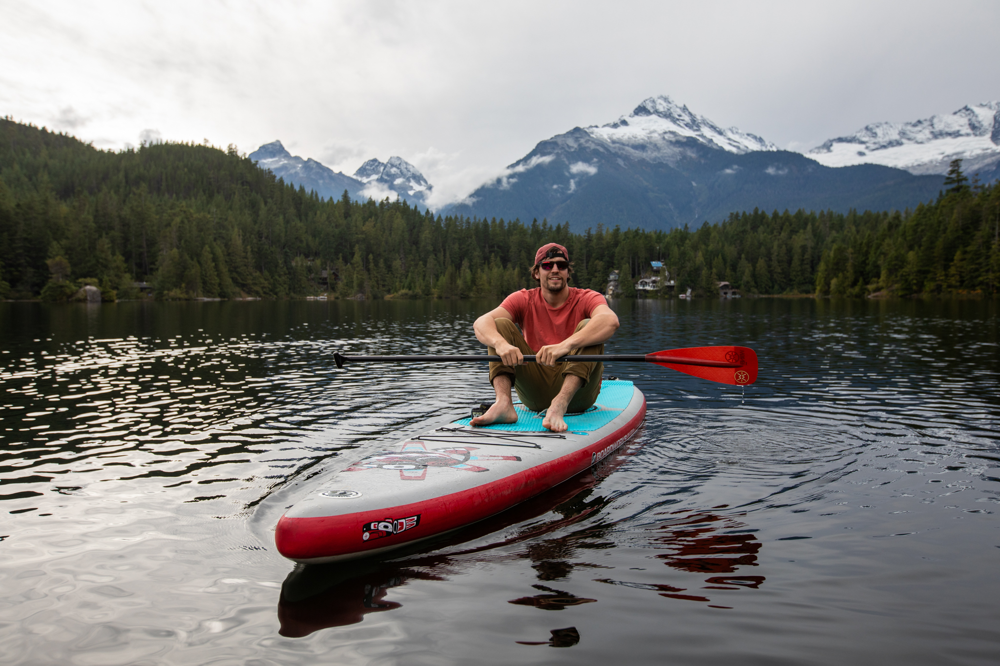

Squamish, BC
Paddleboard Delivery Squamish
Free SUP drop-off anywhere in town — Estuary, Cat Lake, Alice Lake, Brohm Lake, Howe Sound. We bring the boards. You bring the day.
Squamish, BC
Free SUP drop-off anywhere in town — Estuary, Cat Lake, Alice Lake, Brohm Lake, Howe Sound. We bring the boards. You bring the day.

How It Works
Squamish has more good water than most towns have streets — the Estuary, half a dozen lakes within ten minutes of downtown, and the Howe Sound shoreline. The problem is getting boards there without strapping them to the roof of a rental car.
We solve that. Tell us where you want to launch, what time, and how many boards. We'll pull up with the gear set out and ready to paddle — PFDs, paddles, leashes and safety whistles all included. When you're done, we come back and pick everything up.
Where We Deliver
Glass-flat water at dawn with the Stawamus Chief overhead. Tide-dependent — we'll help you time it. Best paddle in town for photos.
Tiny, warm, beginner-friendly lake just north of town. No motorboats, easy parking, perfect for a first SUP session or families with kids.
Four lakes inside the park. We drop boards at your campsite or the day-use beach. The most-requested multi-day delivery in the area.
Warm, swimmable, cliff-jumping water with a forest trail loop around the shore. Mid-day favourite in July and August.
Small mountain lake with a granite-cliff backdrop. Quiet on weekdays, great evening paddle.
Calm tidal channel running right behind downtown Squamish — flatwater paddling steps from a coffee shop.
Britannia Beach, Porteau Cove, Furry Creek. Saltwater paddling with seals, eagles, and views of Anvil Island. Best when the wind drops.
Got a launch in mind that's not on this list? Tell us — if it's reachable by truck we'll get the boards there.
5-Star Google Reviews
"We rented paddleboards for a morning on the Squamish Estuary and it was incredible. Jeremy gave us great tips on where to launch and the gear was top quality. Way better service than anywhere else in Squamish."
"Best canoe rental in the Sea to Sky. Jeremy delivered the canoe right to our campsite at Alice Lake. Everything was included and the canoe was in great shape. Super easy and affordable. Will definitely be back!"
"Jeremy was super helpful in getting us set up. We got the upgraded seat add-on which made the paddle super comfortable. Already planning another rental for Alice Lake!"
Good to Know
Yes. Estuary, Cat Lake, Alice Lake, Brohm Lake, Browning Lake, Mamquam Blind Channel, Howe Sound launches — or somewhere else if you have a spot in mind.
Delivery is free within Squamish town limits and to the popular nearby launches. Longer drives may include a small mileage fee. Call (604) 849-8898 to confirm.
Board, paddle, PFD, leash and whistle — everything you need to be on the water legally and safely.
Yes. Day-rated rentals and multi-day rates available — ideal for camping at Alice Lake or a weekend in town.
Squamish gets afternoon outflow wind in summer. We'll help you pick a sheltered launch (Cat Lake, Brohm, Alice) or a sunrise time slot on the Estuary.
Ready?
Tell us where to drop the boards. Same-day bookings welcome — just call or text Jeremy.
Or email squamishcanoerental@gmail.com
Heading to Whistler instead? See paddleboard delivery in Whistler.
Plan Your Paddle
Squamish Estuary launches are tide-dependent. Check current conditions before booking.
Squamish Tides Forecast